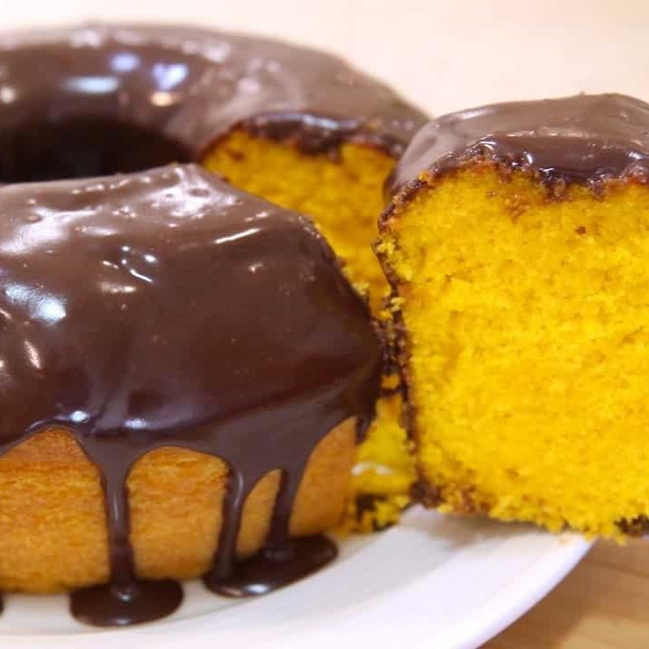

Ingredientes
Massa
- 2 cenouras médias
- 1/2 xícara de óleo
- 2 xícaras de trigo
- 3 ovos
- 1 colher de chá de fermento em pó
- 1 xícara de açúcar
Cobertura de Chocolate
- 1 colher de margarina
- 3 colheres de chocolate em pó
- 1/2 lata de leite condensado
- 1 xícara de leite
Modo de Preparo
Massa
- Coloque no liquidificador a cenoura descascada e picada, os ovos inteiros e o óleo, bata até formar um creme.
- Em uma vasilha separada, coloque o trigo e o açúcar
- Junte o creme do liquidificador e bata por alguns minutos
- Para finalizar, coloque o fermento em pó e mexa bem
- coloque para assar em forno médio, preaquecido, por aproximadamente 40 minutos ou até dourar.
Cobertura
- Coloque todos os ingredientes em uma panela e mexa até engrossar